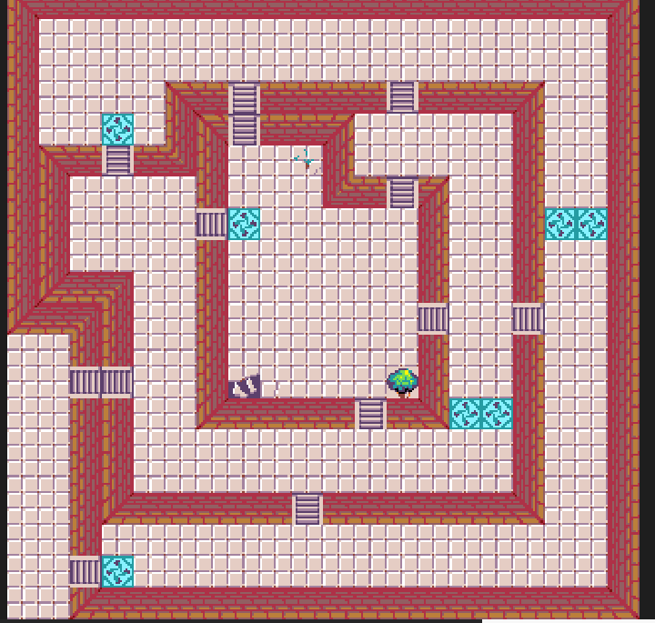
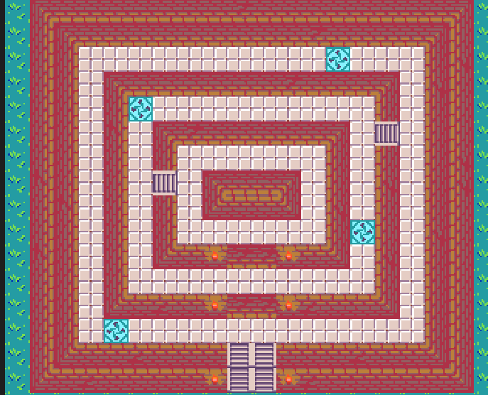

1. fasea Jokoa irabazteko, lehenengo mapan helburu batzuk bete behar dituzu denbora barruan. Lehenik eta behin, mapan dauden txanpon guztiak bildu behar dituzu. Gainera, beharrezkoak diren objektu bereziak ere hartu behar dira, hauek gabe ezin izango duzu aurrera egin. Mapan zehar ondo esploratu behar duzu ezer ez uzteko. Helburu guztiak betetzen dituzunean, zuhaitz berezi bat aurkituko duzu. Zuhaitz hori ukitzean, automatikoki bigarren mapara teletransportatuko zara. |
2. fasea Bigarren mapan, kontuz ibili behar duzu saguzarrekin, kalte egin dezaketelako. Saihestu behar dituzu. Zure helburua da kofre aurkitzea. kofrera iristen zarenean, barruan dagoen izarra ukitu. Izarra ukitzean, jokoa irabazten duzu. Gogoratu: dena denbora amaitu aurretik egin behar da. |
| Atala | Azalpena |
|---|---|
| Jolasteko modua | Kontrolak erabili eta objektuak bildu |
| Helburua | Fase guztiak gainditu eta ihes egin |